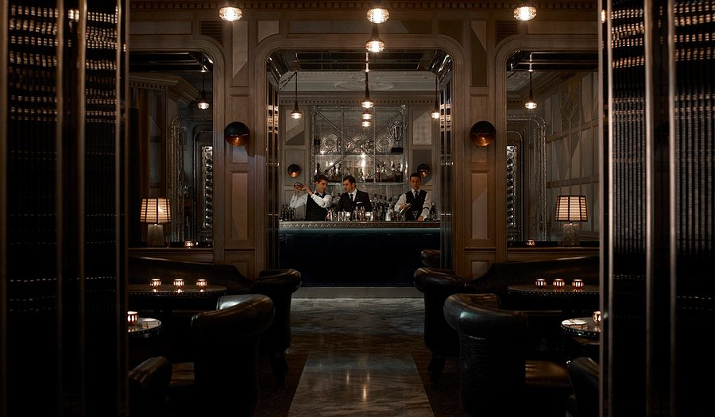
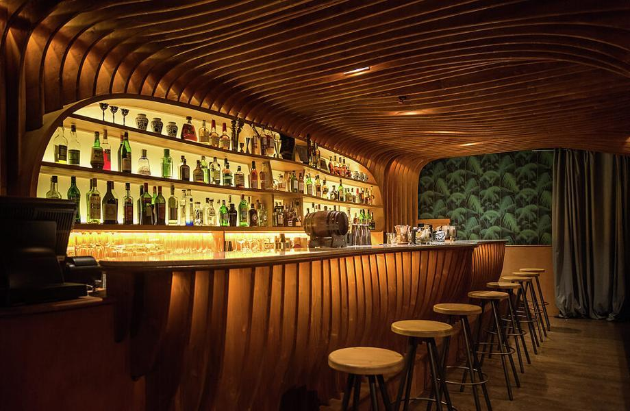
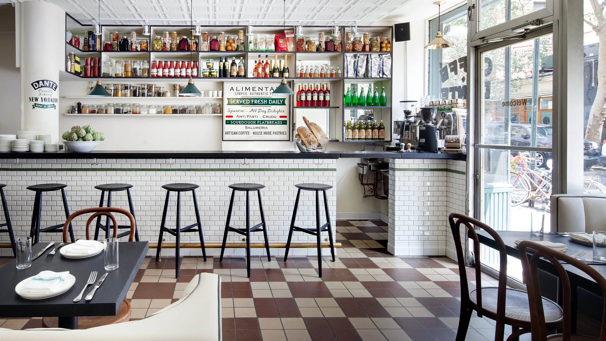
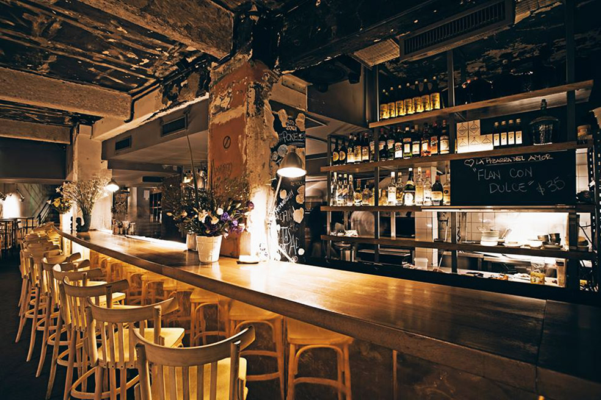
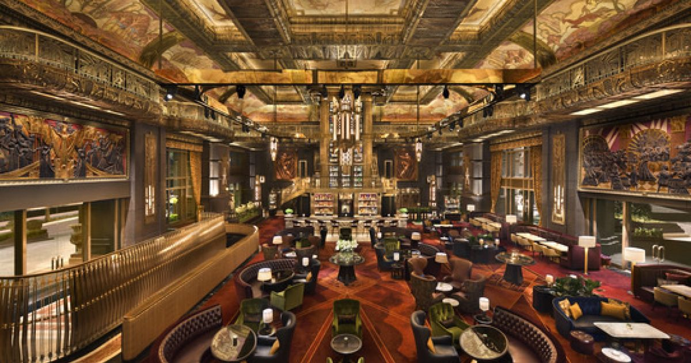

1. Connaught Bar
Location: London, UK
Known for its timeless elegance and signature Martini Trolley, the Connaught Bar is a must-visit destination for cocktail enthusiasts.

2. Paradiso
Location: Barcelona, Spain
Hidden behind a fridge door in a pastrami shop, Paradiso offers a speakeasy vibe with creative and theatrical cocktails.

3. Dante
Location: New York City, USA
Famous for its Negroni variations and aperitivo-inspired drinks, Dante is a staple of the New York cocktail scene.

4. Florería Atlántico
Location: Buenos Aires, Argentina
A speakeasy hidden behind a flower shop, offering cocktails inspired by Argentina's immigrant history and culture.

5. Atlas Bar
Location: Singapore
Known for its luxurious Art Deco design and one of the world's most extensive gin collections, Atlas Bar is a visual and culinary delight.